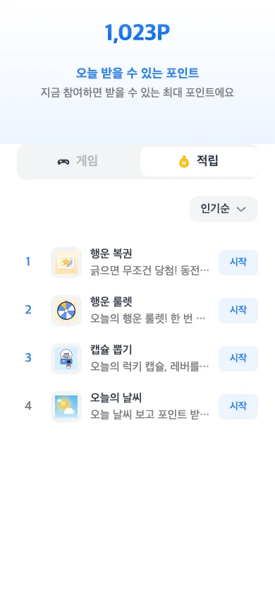
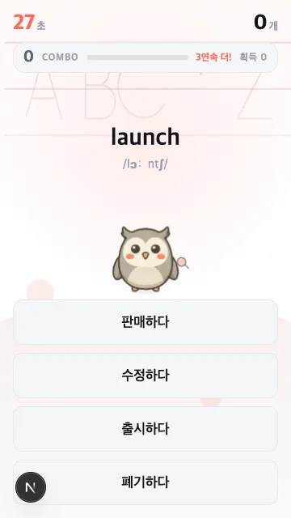
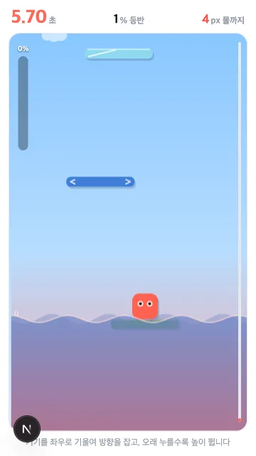
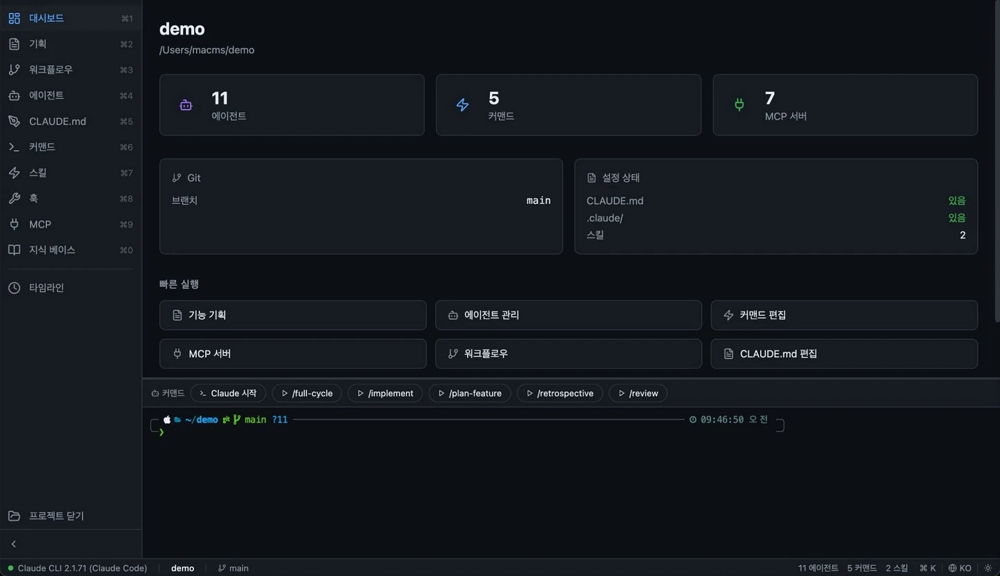
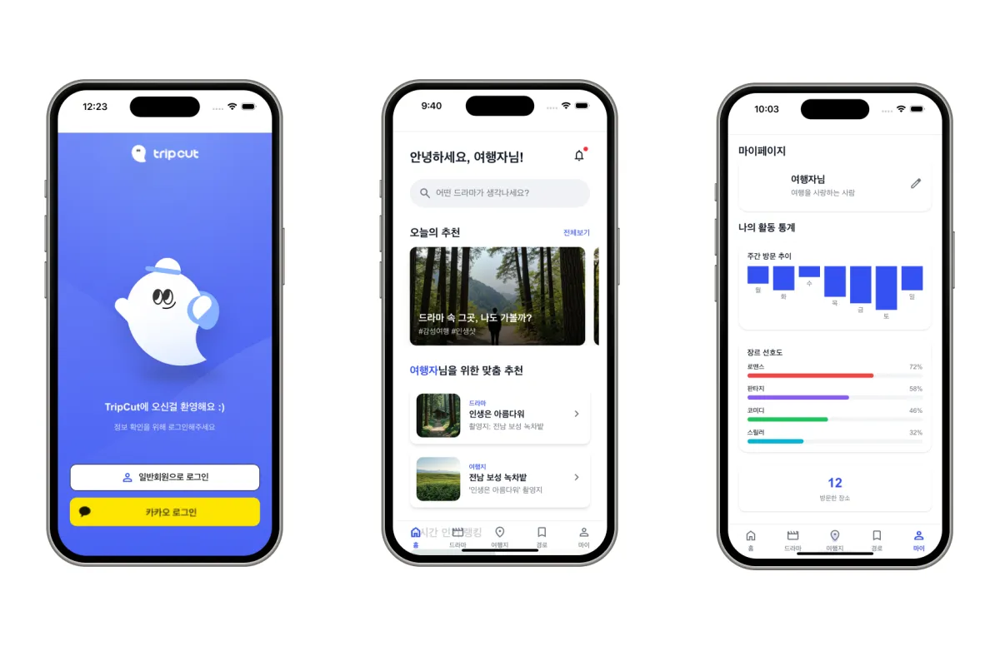
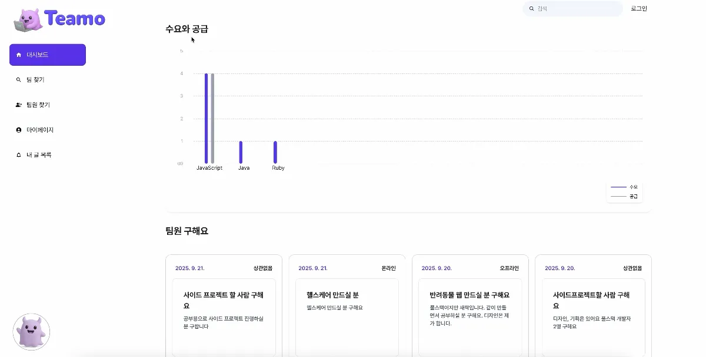
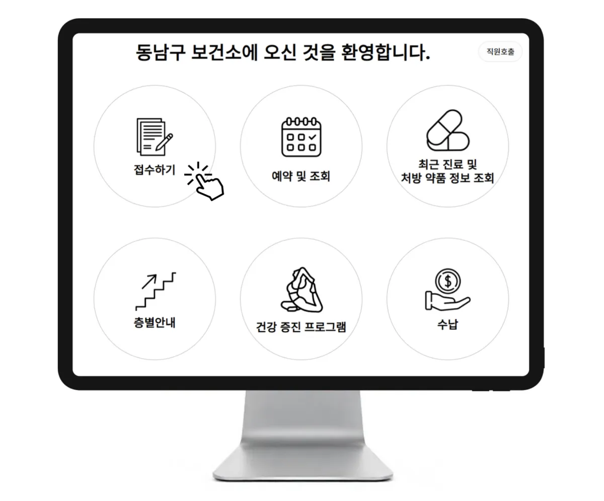
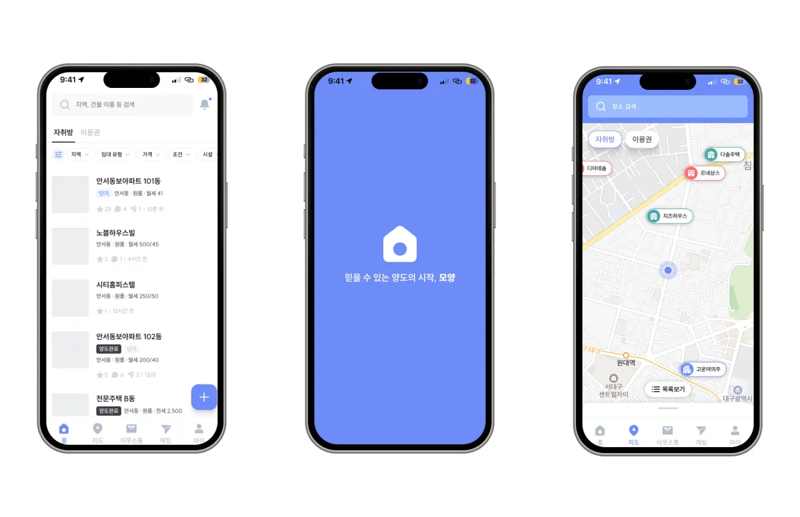

회사 · SDK 이식
OracleX Flutter SDK
동료가 만든 Kotlin·Swift 오퍼월 SDK를 분석해 Dart 중심으로 재구현했습니다. POST 인증, JS 브리지 7종, 팝업·내부 화면·전체 화면의 닫기 순서를 맞췄습니다.
58개 계약 테스트로 공개 API와 웹 연동을 검증하고, 플랫폼별 스크립트 주입 시점과 이전 세션의 콜백을 별도로 처리했습니다.
이식 과정 보기당근 지원Software Engineer, Frontend
산업기능요원 집중 채용 캠페인
Frontend EngineerChoi Minseok
웹과 앱 사이의 흐름을 설계하고,
출시 후 문제까지 해결합니다.
React·TypeScript로 제휴 앱 안의 게임 플랫폼과 운영 웹을 만들었습니다. 필요한 서버·SDK까지 연결하고, 팀이 AI 개발 설정을 공유하는 Forge Studio도 개발했습니다.
01미네르바 · 회사 프로젝트
여러 앱에 미니게임과 광고 보상을 제공하는 플랫폼입니다. 네이티브 SDK에 묶여 있던 화면과 진행 흐름을 웹으로 옮기며, 게임·웹·SDK·서버가 맡을 일을 나누고 연결했습니다.
시작·정지·재개·종료
공통 규약으로 결과 전달
혜택 홈·제출·광고 진행
결과·랭킹·재시도 UI
WebView·세션·JS Bridge
호스트 앱의 광고 어댑터



문서 시작과 경로 변경을 구분해 같은 게임 재시작·화면 재진입 시 초기화 기준을 맞췄습니다.
같은 경로 재로드, 중복 시작 신호, 광고 실패 후 재시도와 화면 복귀를 테스트 대상으로 고정했습니다.
담당과 협업웹·Flutter SDK 구조 설계와 구현, 게임·서버 연동 계약을 맡았습니다. 게임은 팀이 제작했고 인증·시청 검증·보상 통보는 서버 담당자와 맞췄습니다. 위 내용은 2026년 8월 웹 중심 전환 당시의 구현입니다.
구현 내용 더 보기02마블워크 CMS · 회사 프로젝트
마블워크는 걷기와 보드게임으로 모은 보상을 기프티콘·경품으로 바꾸는 앱입니다. 고객 이력, 푸시 캠페인, 이벤트 안내를 연결해 개발자에게 요청하던 운영 업무를 CMS에서 처리하도록 만들었습니다.
버튼을 누른 사실과 발송·지급이 완료된 사실을 구분했습니다. 변경 뒤 조회 데이터를 갱신하고, 운영자가 다음 행동을 판단할 수 있도록 대상·진행 상태·이력을 함께 보여 줬습니다.
03마블워크 · 출시 후 문제 해결
사용자는 광고를 끝까지 봤지만 보상을 받지 못했습니다. 한 가지 오류로 취급하지 않고, 서버 검증 오류·늦은 콜백·앱 종료를 나눠 원인을 찾고 수정했습니다.
451건복구 로직 배포 후 30일간
서버가 대신 지급한 보상
광고 단위 ID가 다른 형식으로 표현되는 경로를 찾아 서버의 검증 처리를 수정했습니다.
광고 객체를 즉시 폐기해 보상 요청이 사라지던 문제를 추적하고, 보상 판정 뒤로 해제 시점을 옮겼습니다.
광고 전에 지급 목적과 대상을 기록했습니다. 시청은 확인됐지만 미지급인 건을 서버가 찾아 복구하도록 했습니다.
5분마다 확인된 미지급 기록을 기존 지급 로직으로 처리했습니다. 같은 날짜·한도 검증을 적용하고, 늦은 앱 요청과 복구 작업이 겹쳐도 한 번만 지급되도록 했습니다.
확인한 결과451건은 지원하는 보상 지면에서 배포 후 30일간 집계한 복구 지급 건수입니다.
누락 원인과 복구 구조 더 보기04마블워크 · 제품 개선
가입을 늘리는 기능을 만드는 데서 멈추지 않고, 사용자가 다시 제품을 쓰는지 확인했습니다. 무엇을 재방문으로 셀지 정하고, 관찰 데이터와 무작위 실험을 구분했습니다.
역할온보딩 흐름과 실험 방향은 기획·리드하고, 코호트 정의·집계와 무작위 배정 로직은 직접 다뤘습니다.
마블워크 전체 구현 보기05Forge Studio · 회사 프로젝트
AI 개발 환경을 개인별 설정 파일에만 두지 않으려고 만들었습니다. 팀원이 설정을 공유하고, 작업 실행을 사람이 제어할 수 있는 데스크톱 제품으로 구현했습니다.

06SDK · AI 제품 · 팀 프로젝트
문제에 맞춰 기술을 선택하고, 익숙하지 않은 실행 환경도 직접 다뤘습니다. 브리지와 실시간 연결, 도구 실행의 상태를 화면의 사용 경험으로 이어 간 사례입니다.
회사 · SDK 이식
동료가 만든 Kotlin·Swift 오퍼월 SDK를 분석해 Dart 중심으로 재구현했습니다. POST 인증, JS 브리지 7종, 팝업·내부 화면·전체 화면의 닫기 순서를 맞췄습니다.
58개 계약 테스트로 공개 API와 웹 연동을 검증하고, 플랫폼별 스크립트 주입 시점과 이전 세션의 콜백을 별도로 처리했습니다.
이식 과정 보기개인 · AI 제품
코딩·조사·브라우저 작업을 맡기는 AI 에이전트와 장기기억을 만들었습니다. 서버 세션이 작업을 유지하고 앱·웹이 같은 진행 상태를 봅니다.
OpenAI 호환 스트리밍, MCP 기억 조회, 진행 표시·승인·중단을 연결해 긴 작업을 사용자가 제어하도록 했습니다.
에이전트 구조 보기
Next.js 프론트엔드 · 2025.01 – 03
촬영지 탐색·후기·코스를 연결하고, 모바일 바텀시트와 PWA 설치·기본 캐싱을 구현했습니다.

풀스택·배포 · 2024.06 – 12
팀원 모집 화면과 Socket.IO 채팅을 개발하고, ARM 서버에 맞춘 멀티 아키텍처 배포를 연결했습니다.

팀 리드·풀스택 · 2024.01 – 06
React는 레이아웃·라우팅, Flutter Web은 기능 모듈을 맡도록 통신 경계를 정해 팀의 결과물을 통합했습니다.

Flutter 프론트엔드 · 2024.12 –
지도 범위 조회·마커 클러스터링과 필터 상태, STOMP 채팅 재연결·메시지 큐를 구현했습니다.